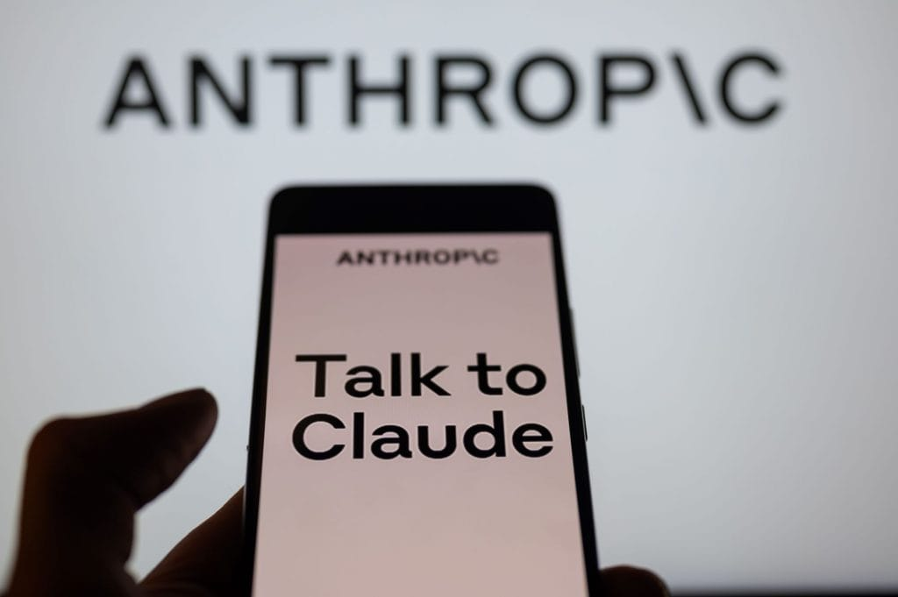

A Anthropic lançou o Claude for Education, uma versão do seu chatbot de IA voltada para o ensino superior. A
medida surge como uma clara resposta ao ChatGPT Edu da OpenAI, sua concorrente.
O novo recurso inclui o “Learning Mode”, que visa desenvolver habilidades de pensamento crítico nos alunos,
fazendo com que o Claude proponha questões e forneça modelos úteis para estudos, como esboços e guias de
pesquisa.
Com o objetivo de aumentar suas receitas, a Anthropic busca expandir sua presença no setor educacional,
competindo diretamente com a OpenAI.
A Anthropic espera aumentar esses contratos por meio de programas de
embaixadores e incentivar o uso de IA por
estudantes, já que 54% dos universitários a utilizam semanalmente, segundo pesquisa de 2024.
Contudo, o impacto da IA na educação ainda é incerto, com opiniões divergentes sobre seus benefícios desta
tecnologia e potenciais prejuízos ao pensamento crítico.